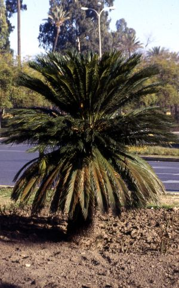
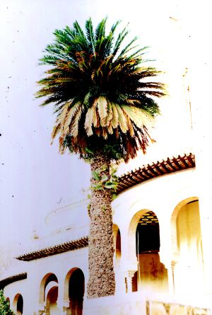

El conjunto
más destacado de esta
especie en los parques y jardines de Sevilla es el de la Glorieta de la
Pasarela, donde existen numerosos ejemplares de un metro o dos de
altura:


 Uno de los dos ejemplares del Pabellón Mudéjar Foto: © Carlos Romero Zarco, 2001 |
Otro conjunto formado por varios pies
masculinos y femeninos crece en la Plaza de Cuba, a ambos lados de la
entrada al puente de San Telmo.
Los ejemplares más viejos y más altos que conozco en Sevilla son los dos que flanquean la entrada del Pabellón Mudéjar de la Plaza de América, en el Parque de María Luisa. Fueron plantados allí hacia el año 1919, poco después de la construcción de los pabellones para la Exposición de 1929, pero ya eran de gran talla en aquel momento. Posiblemente nacieron a principios del siglo XX. Otros ejemplares de gran porte crecen en el jardín del Hotel Alfonso XII y en los jardines del Real Alcázar de Sevilla. |